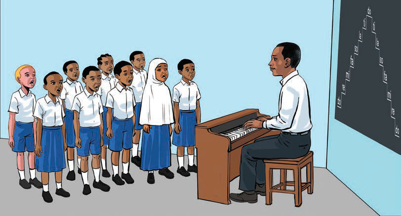

Exercise 1
1. Why is it important to consider musical dynamics when singing a song?
2. Explain factors that can cause lack of voice balance in a singing group.
3. Explain how you can solve the problem of voice imbalance in a singing group.
Solfa singing
This is a method of singing melodies using specific syllables that represent musical pitches instead of the actual lyrics of a song.
These syllables are known as solfa.
They are: do, re, mi, fa, so, la, ti.
This method makes it easier to learn accurate note singing and helps improve the ability to read and write music.
Figure 1 shows pupils singing using solfa.

Figure 1: Pupils singing solfa
Musical notes
Musical notes are symbols used to represent duration in written music.
Musical notes indicate the duration for which a particular note should be sung or played accurately.
In music, there are different types of notes such as whole notes, half notes and quarter notes.
Normally, a whole note lasts four beats, a half note lasts two beats, and a quarter note lasts one beat.
These musical notes differ in length, so in singing a major scale using solfa, we choose the type of note,